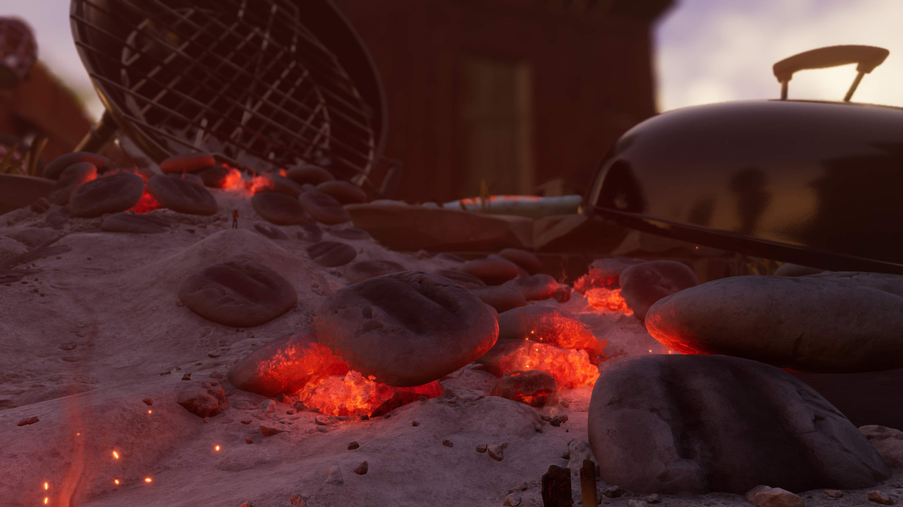
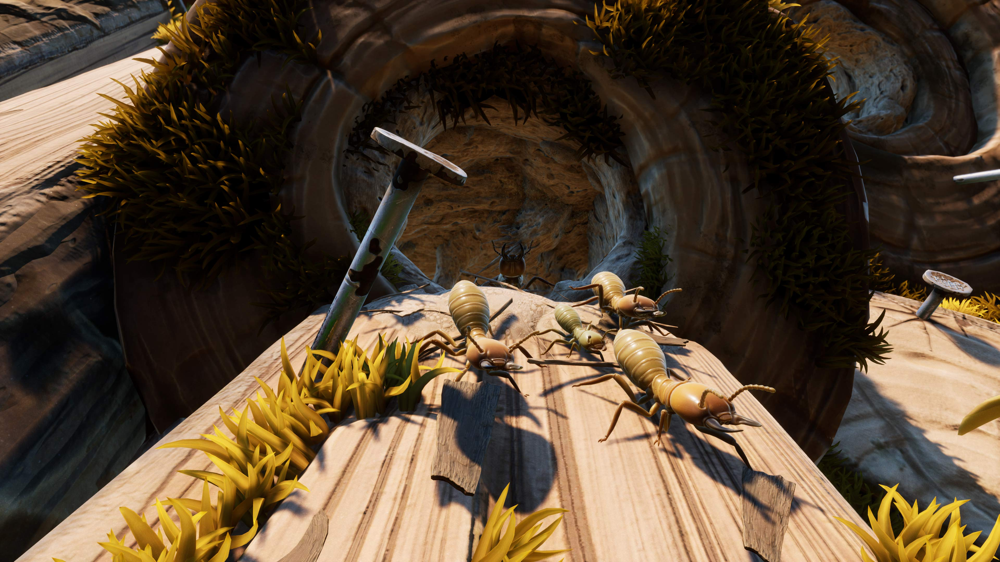
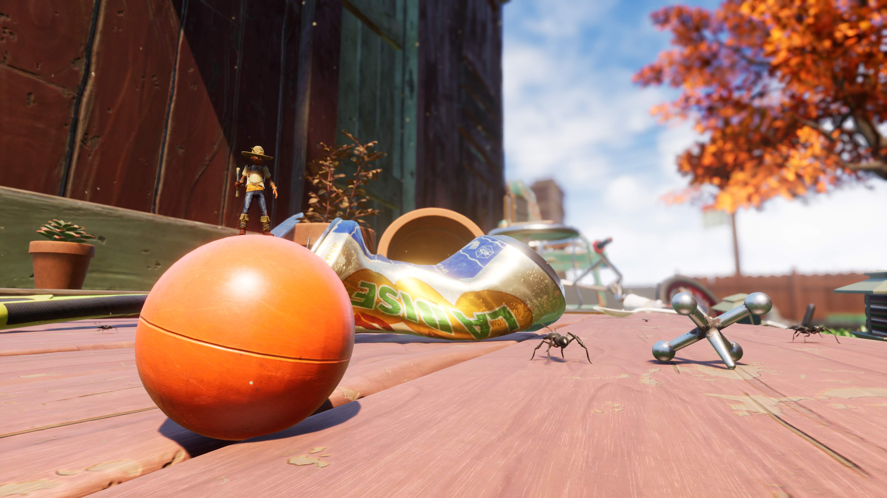
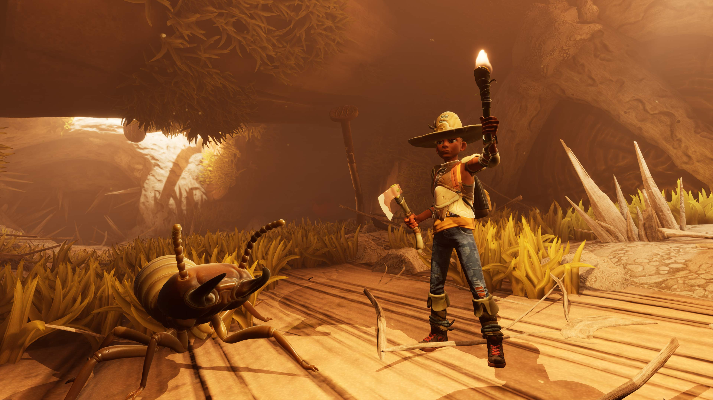
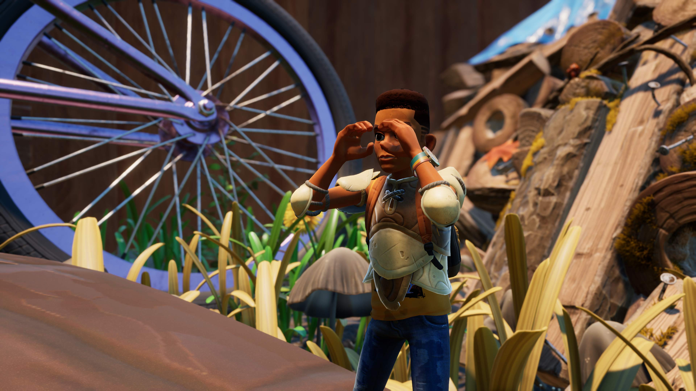
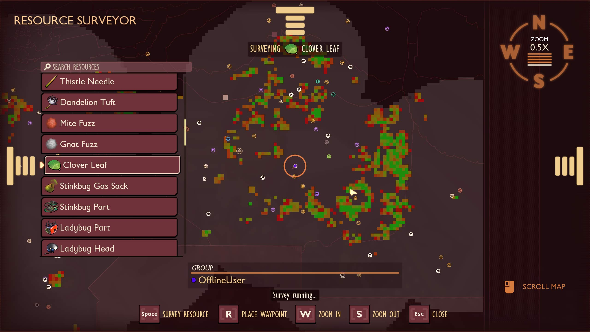
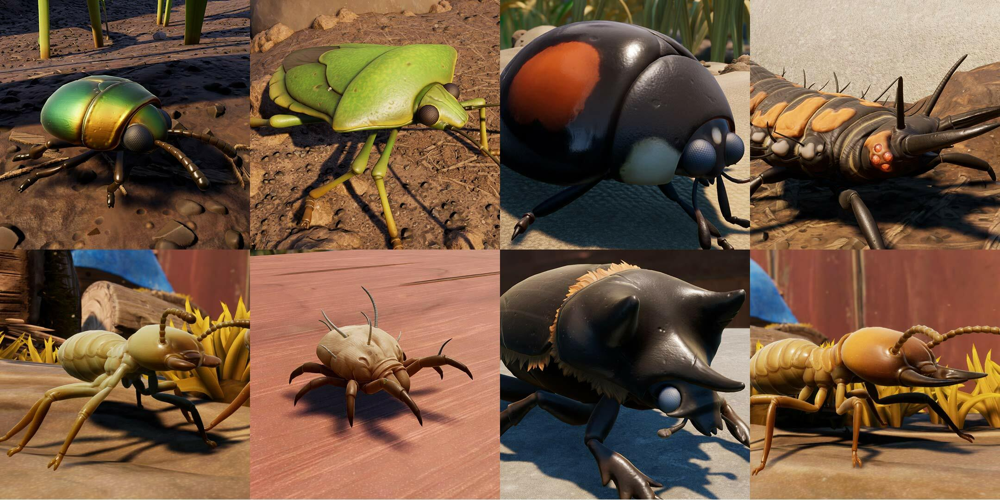

NEW AREAS TO EXPLORE!
THE BBQ SPILL

THE TERMITE DUNGEON

AND MORE PLACES TO EXPLORE AROUND THE SHED!

NEW CRAFTING CONTENT AND BUILDING UPDATES

PEEP(.R) OUR NEW FEATURES!


QUALITY OF LIFE IMPROVEMENTS
TEN NEW “FRIENDS” (AND ONE ROYAL SURPRISE)!
